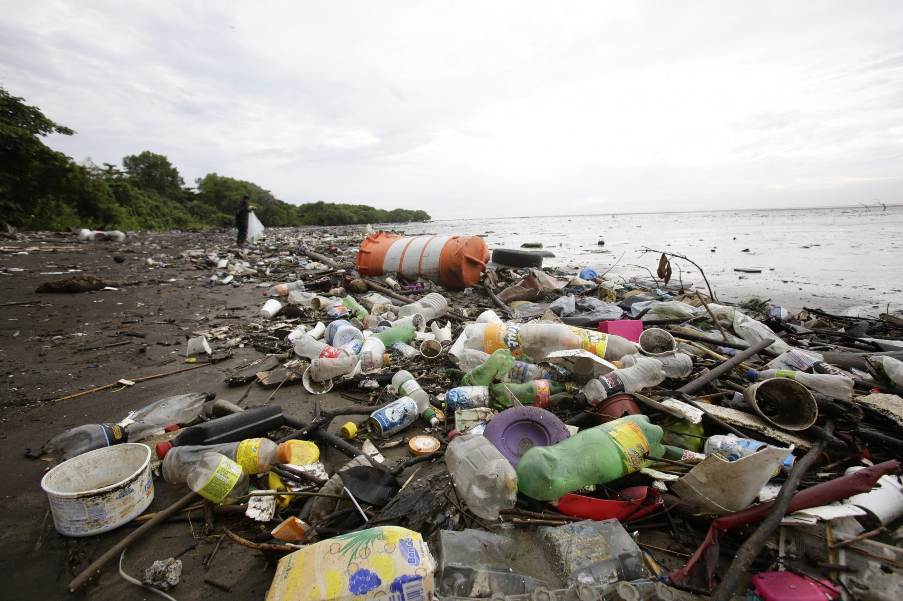
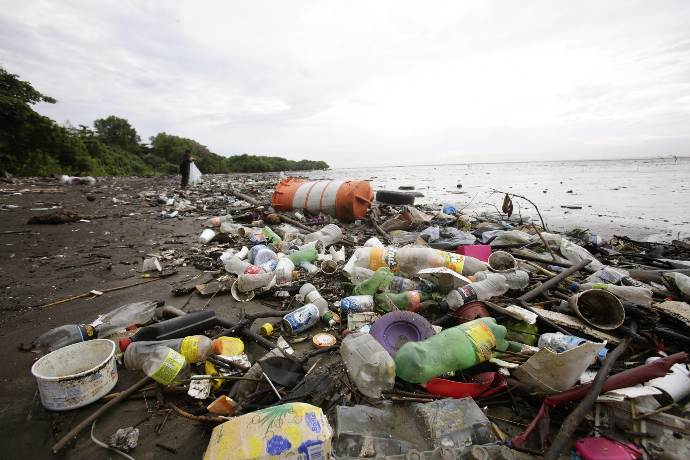
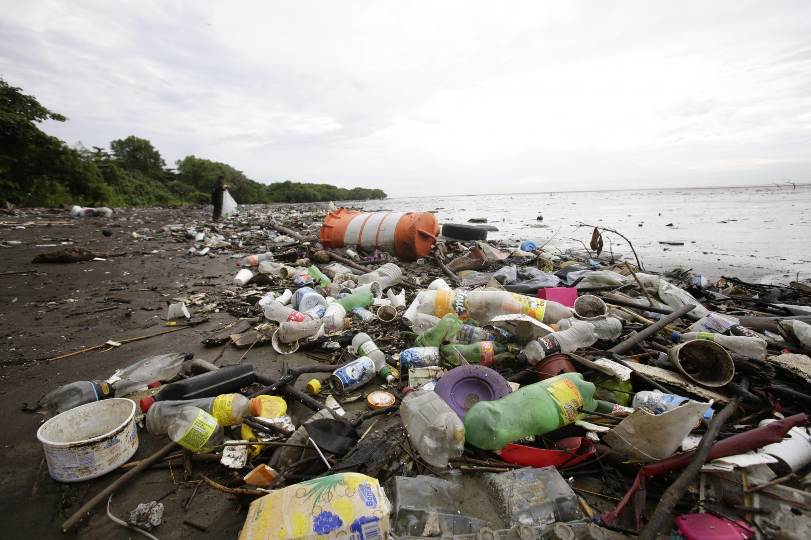

El impacto del reciclaje
 

¡Explora, aprende y actúa por un planeta más limpio!
Más de 1 millón de botellas plásticas se desechan diariamente en Chile.
El 90% de los residuos que llegan al océano son plásticos.
En INACAP Santiago Centro, el reciclaje está tomando fuerza 💪. ¡Infórmate y participa!
En Chile, especialmente en Santiago, la gestión de residuos es un desafío urgente. Se generan más de 1.2 kilos de basura por persona al día, y gran parte de esos desechos no se reciclan.
En zonas urbanas como Santiago Centro, el exceso de basura afecta plazas, calles y zonas residenciales. Los microbasurales ilegales y la falta de educación ambiental empeoran el problema.
Chile tiene más de 6,000 km de costa. La basura de ciudades como Santiago llega a los ríos y termina en el mar, afectando gravemente la fauna marina. 🐠
Reciclar es una forma activa de proteger nuestro entorno, empezando por nuestros propios espacios como INACAP.

Encuentra el lugar más cercano para llevar tus reciclables, incluyendo dentro de INACAP Santiago Centro.
Ver Mapa